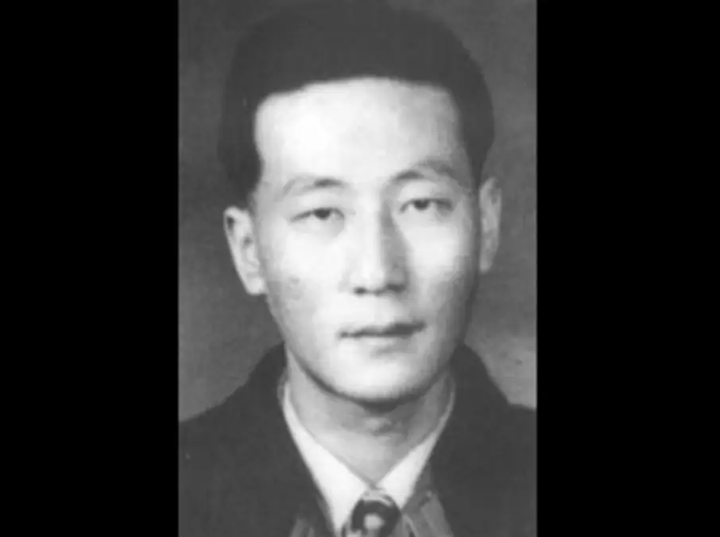
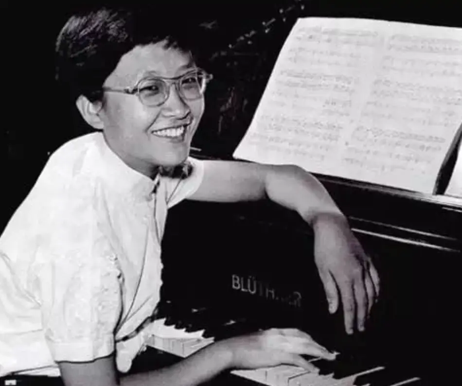

-01- 打地铺的剧作家
今年年中，因为对孩子教育的焦虑，让我想到了姜原来老师。
原因有二。
一是我曾经听过姜原来老师关于鲁迅的讲座，这场讲座让我印象深刻，不仅让我深刻地理解了鲁迅的呐喊和彷徨，更得知了鲁迅先生与内山完造之间感人的友谊。
姜原来老师的知识以及在灵性上的感受，并非全部来自于书本和理论，更多是来自于他的双脚。
姜老师一直在向我们这些年轻人强调，中国是世界上最大的“秘”国。
秘密的秘！
就像姜老师所言：在中华大地的深处，在东方的底层，在那些人牲人魔之地，发生着太多壮丽悲美却鲜为人知的故事。
我们所谓的知识界和精英，长久以来与这个“秘”境保持着距离，以至于丢掉了真正的灵魂和方向，这是一件很悲哀的事情。
所以，姜老师走访民工、矿工、渔民，在行走中思考、记录，并将一个又一个令人吃惊的故事创作成了话剧。
对于如此宝贵的前辈 ，自能解答我的疑惑。

△姜原来老师在纪录片《十二》中的剧照，上海人，曾去黑龙江偏僻乡村“插队落户”三年多，大学毕业后长期在政府和研究所从事风景区自然保护区环境规划和野外环境科研等工作。上世纪八十年代成为基督徒，九十年代初进入民间文化基督教文化领域，先是协助其母创办闻名沪上的微型书店“马槽书店”，后主办被誉为当时“上海唯一大型民间公益文化沙龙”的马槽沙龙、与一批青年朋友创办“马槽剧社”、倡导“走进历史现场”在多地举办大量“马槽历史文化考察”。九十年代末开始创作，被认为是中国大陆最重要的基督徒剧作家，人称“打地铺的剧作家”。
其二，是姜老师培养了一个非常优秀的女儿，她在德语文学和古典音乐鉴赏上有着极高的造诣，并成为了复旦最年轻的副教授。
这些都让我对姜老师的家庭教育充满了好奇，所以专门请姜原来老师分享了他对教育的看法以及他和女儿之间的故事。
姜老师的分享让我非常受益，他认为在对孩子的教育中，如今的家长过于理性，总喜欢讲道理。
事实上，孩子不需要大道理，需要的是感性教育。
这种感性教育一方面来自于家长的表率。
另一方面，则是来自于古典艺术的滋养，尤其是古典音乐。
姜老师自己因为家中妈妈的唱片而爱上了古典音乐，这些音乐不仅让他培育了很好的审美，更对他的心灵提供了极大的滋养和精神力量。
而姜原来老师的女儿，也是从小在外婆的唱片中，在和父亲一起在音乐厅的游走中，再次被伟大的音乐养育。
因此，面对今天家长鸡血式的艺术教育，姜老师感到非常痛心，现在很多家长为了攀比和跟潮流，总是逼着孩子学各种乐器，最后的结果是让孩子成为了“会乐器却不喜爱音乐”的人。
这简直是一种灾难性、摧毁性的教育。
除了以上两点，在对孩子的感性教育中，姜老师强调千万不能切断与底层的联系，所以在很多走访中，姜老师都会带上自己的女儿。
只有这种行走才可以培育出孩子对于复杂社会的丰富感受，也才能产生出真正的道义和责任。
事实上，这也是对伟大音乐的一种回应和践行。
-02- 贝多芬在中国
我自己是个古典音乐白痴。
所以姜原来老师创作的大型音乐话剧《贝多芬在中国》，对我自己来说是一个很好的开始。
这部剧作讲述了一个很有意思的故事。
贝多芬去世后，天使问他有什么遗憾。
除了艺术创作的终止，最让贝多芬遗憾的是未能前往他感兴趣的东方古国中国去旅行。
最终，上帝允许贝多芬的灵魂在中国逗留到新千年。
所以，《贝多芬在中国》分了六幕呈现了贝多芬在中国的故事，这些故事从晚清一直跨越到20世纪末。
不仅以生动的故事呈现了贝多芬音乐在中国的传播和影响，还借着他的眼睛为我们呈现了百年来华人所经历的酸甜苦辣。
贝多芬的音乐与发生在中华大地的故事相互交织。
就像贝多芬自己所言：音乐是比一切智慧，一切哲学更高的启示。
在这些充满灵性的音乐里，中华儿女的悲情不仅得到了共鸣和理解，更找寻到了力量和希望。
这部话剧第一个故事放置在晚清，贝多芬的幽灵寻声而来。
此时，一个叫做亨德尔的洋人正拉着小提琴，演奏着贝多芬动人的音乐。
他的门外，一个叫做林秀才的中国人怀着极其复杂的心态聆听着这天籁。
原来，三年前，亨德尔随着东印度公司来到中国，因为一场大风暴，他差一点殒命大海。
幸运的是，亨德尔被梁老伯一家冒着生命的危险救了下来。
三年来，亨德尔一边在洋行工作，一边将美妙的音乐传播给好多人，林秀才便是其中最为痴迷的一位。
可现在，梁老伯一家却因为鸦片而自杀，只留下在外打工的阿梁。
而阿梁和林秀才是非常要好的朋友。
所以，当林秀才面对亨德尔美妙的音乐时心情非常复杂，那些鸦片正是亨德尔上班的洋行运输而来的，无数中国同胞的生命被鸦片无情吞灭。
这份复杂写出了晚清时期国人心里的困惑，随着西方列强的入侵，鸦片来了，贝多芬也来了；强盗来了，宣教士也来了。
一时，已经封闭千年的中国人像是被打了一闷棍，无法辨别出文明与野蛮，善良与邪恶。
所以，有人会像阿梁一样将所有西方的东西当做妖物，烧洋行、烧乐谱、想要烧尽一切西方之物。
有人也向林秀才一样，明明感受到了很多西方的文明和美好，但也一样遭遇了西方极大的恶意和罪行。
国破家亡的伤痛之下，他又如何能再次陶醉于贝多芬的天籁之中。
所以，他用贝多芬向亨德尔发出拷问：
“在那儿（西方）圣贤与强盗是一个人么，在那儿诗是用血写的么 ，在那儿乐器是用人骨做成的么！
你们怎么能带来至美 又带来至丑 ，带来至善，又带来至恶，你们怎么能指出天堂之路，又打开地狱之门呢”
面对林秀才的真挚和痛苦，亨德尔终于鼓起勇气，本着良心的自由，从洋行中辞去工作......
-03- 贝多芬在中国 走向世界
《贝多芬在中国》的每一个故事，都在向这个吃人的世界发出拷问和质疑。
第二个故事描述了抗日战争期间一群躲在深山中的老百姓，一边是猛如虎的苛政，一边是步步紧逼的日本侵略者。
在逃无可逃、退无可退的境地里，他们的希望在哪里？
第三个故事，这部作品直接将我们的目光聚焦在一个可怕的日本军官身上，他怎么能既欣赏着贝多芬的音乐，又可以将冷血的手术刀伸向无辜的中国人。
难道，在贝多芬的音乐中，只能感受到美，却无法产生负罪感？
第四个故事发生在文革晚期，在那个特殊的时期，贝多芬被当做了阶级敌人，成为了腐蚀革命斗志的妖物。
随意，贝多芬遭到了大字报的批判，他的唱片被砸，乐谱被焚烧，演奏他音乐的人被邻居揭发甚至被杀害。
到底是什么样的人间炼狱，可以让听音乐也成为一种可以被杀头的罪名。
最后一个故事发生在上世纪末的一个独立音乐沙龙，消费主义泛滥、个人主义肆虐的社会环境下，贝多芬丰富的音乐不仅遭到了阉割，更成为了精英用来标榜自己身份的标贴。
是否还有人在乎真正的艺术？
这些都是姜原来老师根据真实故事改编而来，比如文革中的那个故事有着很多原形。
里面的陆老师，是当年上海交响乐团的常任指挥陆洪恩。

△陆洪恩，1954年任上海交响乐团指挥，擅长指挥贝多芬作品，曾为电影《武训传》创作插曲，1966年因“反动言论”被捕入狱。在狱中，依旧敢说敢言，后因屡遭批斗、挨饿、侮辱、毒打，精神错乱，1968年4月27日被枪杀。
还有另一个人物的原型是当年中国最优秀的女钢琴家顾圣婴。
而他们，都倒在了那个特殊的年代。

△顾圣婴（1937－1967），钢琴演奏家，原籍无锡，1937年7月2日生于上海。1949年就读中西女中，1954年考入上海交响乐团。1957年在莫斯科参加第六届世界青年联欢节钢琴比赛，获金质奖章。1958年参加日内瓦第十四届国际钢琴比赛，与日后成为世界著名钢琴大师的毛里奇奥·波利尼同获最高奖，名震世界乐坛。文革时期，顾圣婴一家遭到残酷迫害，1967年1月31日顾圣婴在上海交响乐团批斗会上惨遭羞辱，当晚与母亲弟弟开煤气全家自杀。
这些故事串起来的百年历史中，写满了八个字：滔天大罪和并不在乎。
这才是压在中国人身上最可怕的一座冰山。
而贝多芬的音乐也一直在百年间不同程度地融化着这座坚硬无比的冰山，他的作品一直在向听众传达一种召唤：
“要将目光投向那些不幸的人，而不是只顾自己和自己的生活，
又叫我们抬头仰望星空，而不是只盯着周遭的现实”。
所以，亨德尔会辞去吃人血馒头的工作。
躲在深山中淳朴的老百姓会在贝多芬优美的乐曲中感受到力量。
那位日本军官会在贝多芬的《庄严弥撒》中禁不住跪倒在地上。
而在特殊时期，为了坚守诚实，有人哼着贝多芬的乐曲欣然赴死。
而面对资本逐利、庸俗文化泛滥的今天，有人坚持创办独立沙龙，来全面地呈现伟大的音乐。
这些举动虽然看上去很微小，但却是充满力量和希望的。
今年，这部优秀的剧作将被邀请参加纽约当代中国音乐节，将在世界著名的纽约卡内基音乐厅、林肯艺术中心上演。
在贝多芬250周年诞辰上，全世界将会在贝多芬的音乐中，领略这些发生在中华大地壮丽凄美的故事，这是多么值得感恩的一件事。
-end-
特别推荐：
1、如果您对古典音乐感兴趣，大家可以在网易云搜索：姜原来外公-打地铺的剧作家喜欢的音乐，那里有姜老师辛苦收藏的近千首经典音乐，或者您可直接复制以下链接到浏览器：http://dwz.date/daf2
2、如果您对姜老师的更多作品做进一步的了解，欢迎关注姜老师的公众号：马槽原野 关于姜原来作品
3、如果您对姜老师想做更多了解，可以点击以下蓝字，或直接观看纪录片《十二》
被忽视、被屏蔽，艰辛的大多数，他们的故事在哪里？

这里没有挑逗你眼目情欲的小鲜肉
也没有挑动你肉体情欲的段子
更没有膨胀你今生骄傲的鸡血
我们只在乎那些最质朴真诚的作品
在那里我们才能恢复真正的想象力
我们也坚信这才是我们真正需要的

ID:Six_hundred_hits
长按二维码，一键关注
【六百击】
电影评论
尽情分享朋友圈

微信二维码打赏通道